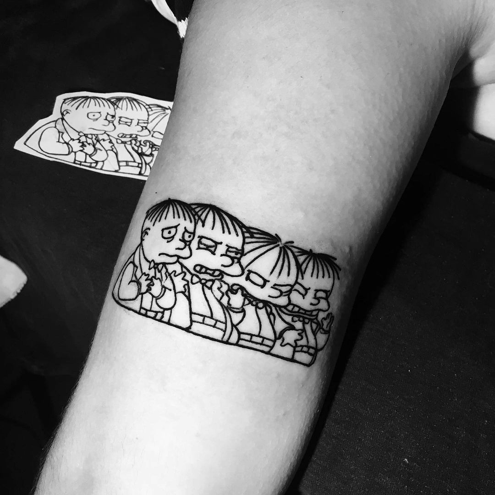

Machinery
Tattoo Coil Machine

Tattoo Rotary Machine

Tattoo Liner Machine


1.Cuando las personas tienen alergias moderadas o muy persistentes su alergia saltará en minutos.
Debes untar algo de tinta en la parte interna de la muñeca del cliente. Hay que dejarla ahí unos minutos (quizás unos 5 o 10).
Al enjuagar la tinta, si la zona está roja, tiene manchas, ronchas o causa comezón, descartarla por completo en ese cliente.
2. Test en la mejilla Es el mismo proceso que arriba, solo que hay que ser mucho más cuidadoso pues es una zona mucho más sensible, pero aun así es más eficiente que la muñeca en las personas que no están del todo seguras si pueden o no tener una reacción alérgica.
3. Revisa la piel del cliente Si tu cliente no tiene 18 años y en su piel ves muchos puntos rojos, marcas, granitos, o cualquier cosa que no sea "normal" es más que seguro que tu cliente tiene la piel demasiado sensible, así que lo mejor es evitar los pigmentos de color, o en casos más extremos no tatuar al cliente. De hecho, si en la zona vemos "alteraciones cutáneas" lo mejor es no tatuar la zona, sea con tintas de color o negras, lo mejor es no hacerlo pues al final esas alteraciones van a deformar el tatuaje de alguna forma. Incluso es muy posible que causes una lesión en la piel.
4. Tatuar un "puntito" en el dedo Está ya debe considerarse como la última de las opciones, cuando el cliente sigue creyendo que puede ser alérgico (aunque haya pasado los "test" anteriores). Debemos tatuar un pequeño punto en un costado de algún dedo, y deberemos esperar unos minutos, quizás unos 15. Si no sucede nada el cliente no es alérgico a la tinta, pero si sucede… Lo mejor es tallar la zona con un estropajo hasta "abrir la piel" y retirar la tinta con agua. De hecho, la razón por la que este "test" se hace en el dedo es porque la zona es más "dura" que otras partes del cuerpo, así que si es necesario tallar la piel hasta romperla el cliente no sufrirá mucho dolor, cosa contraria si es en un brazo, por ejemplo. Recuerda que si vas a utilizar este último "test" debes prevenir al cliente que si la prueba sale mal deberás retirar la tinta tallando fuertemente.